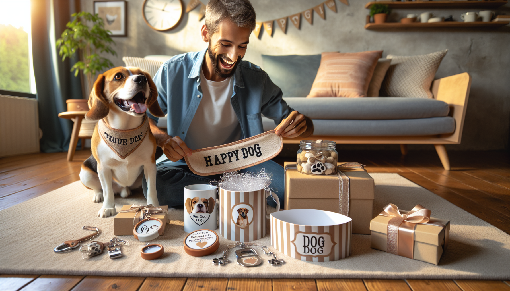

Finding the perfect present for a dog lover can feel surprisingly tricky. You want something meaningful, useful, and personal, but you also want to stay within budget. The good news? There are plenty of adorable, practical, and memorable options that do not cost a fortune. If you have been searching for the best personalized dog gifts under $50, you are in the right place.
Personalized pet gifts have a special kind of charm. They show thoughtfulness, celebrate the bond between a pup and their person, and often become treasured keepsakes. Whether you are shopping for a birthday, holiday, adoption anniversary, pet parent gift, or just because, custom dog gifts can make a big impression without a big price tag.
In this guide, we are sharing affordable personalized dog gift ideas that are sweet, stylish, and genuinely useful. From everyday accessories to display-worthy keepsakes, these picks are ideal for pet owners, dog moms, dog dads, and anyone who loves spoiling their four-legged best friend.
There is a reason custom gifts stand out. A personalized dog gift goes beyond being cute or convenient. It feels intentional. Adding a dog’s name, photo, breed illustration, or a meaningful date instantly transforms an everyday item into something memorable.
For pet owners, dogs are family. That means gifts that celebrate their pup often have a lot of emotional value. A custom item can honor a new puppy, mark a rescue adoption, commemorate a beloved companion, or simply bring a smile to someone’s face every day.
Another reason personalized dog gifts are so popular is versatility. You can find custom options for home decor, walks, mealtime, travel, and keepsakes. Better yet, many of the best ones are available at budget-friendly price points, making it easy to find something heartfelt under $50.
Personalized dog bandanas are one of the most popular dog gifts for a reason. They are affordable, adorable, and easy to customize with a dog’s name, nickname, or a playful phrase. They also photograph beautifully, which makes them especially fun for social media-loving pet parents.
A custom bandana works well for birthdays, gotcha days, holiday gifts, or as a surprise for a new dog owner. Many pet parents love having a few seasonal accessories on hand, and a personalized bandana gives that collection a unique touch.
Look for soft, durable materials and designs that are easy to slip on over a collar or tie comfortably. You can also choose styles that match the dog’s personality, from minimal and modern to bright and playful.
Why it is a great gift under $50:
If you want a gift that is both thoughtful and useful, an engraved pet tag is a fantastic choice. Personalized dog tags can include the dog’s name, owner contact information, or even a short phrase. They help keep pets safe while also adding a stylish detail to the dog’s collar.
Today’s custom pet tags come in a wide range of shapes, colors, and finishes. You can find classic bone-shaped tags, modern round tags, minimalist engraved styles, and playful designs that reflect the dog’s personality. Some gift shoppers even pair a tag with a bandana or collar accessory to create a complete gift set while still staying under budget.
This is an especially smart gift for new puppy parents or anyone who recently adopted a rescue dog. It is practical enough to use every day, but because it is customized, it still feels personal and gift-worthy.
Dog lovers are always stocked up on treats, which makes a personalized treat jar a charming and functional gift. Whether it features the dog’s name, a custom label, or a cute pet-themed design, this is one of those gifts that instantly brightens up a kitchen counter or pantry shelf.
Custom treat containers are ideal for pet owners who appreciate both organization and decor. They help keep snacks fresh while adding a personalized touch to the home. If the recipient enjoys hosting, decorating, or keeping their pet essentials neatly displayed, this can be an especially appreciated choice.
For an extra thoughtful touch, you can fill the jar with a few favorite dog treats before gifting it, assuming you know the dog’s dietary preferences. Even on its own, though, a personalized jar feels polished and useful.
Why gift shoppers love this option:
Sometimes the best personalized dog gifts are for the humans who are completely obsessed with their pets. A custom mug featuring a dog’s name, breed, illustration, or photo is a classic under-$50 gift that feels personal and easy to enjoy every day.
Whether someone starts their morning with coffee, tea, or hot cocoa, a dog-themed mug can become part of their daily routine. It is a sweet reminder of their furry companion and often becomes a favorite item at home or even at the office.
Personalized drinkware is also a versatile choice because it suits nearly any occasion. It can be funny, sentimental, artistic, or minimalist depending on the design. For dog moms, dog dads, coworkers, friends, or family members, it is a reliable gift that balances affordability and heart.
If you are looking for something sentimental, personalized ornaments and keepsakes are wonderful options. These gifts often become treasured mementos, especially for major milestones like a first holiday with a new puppy, an adoption anniversary, or a memorial tribute for a beloved pet.
Custom ornaments can include a dog’s name, year, silhouette, breed, or photo. While many people think of ornaments as holiday-only gifts, they can also be displayed year-round on hooks, shelves, or memory walls. Small keepsake plaques and decorative signs offer similar emotional value while staying within the same affordable price range.
These gifts are especially meaningful because they tell a story. They capture a moment in time and give pet owners something tangible to hold onto. That emotional connection can make even a simple item feel priceless.
Another great category to explore is personalized dog accessories designed for daily use. This can include custom leash holders, small travel pouches, personalized poop bag holders, feeding mats, or compact storage items. These gifts are practical, but the customization makes them feel more fun and intentional.
For active dog owners, personalized everyday accessories can be especially helpful. They support routines like walks, road trips, park visits, and mealtime while adding a polished touch. If the recipient is someone who loves accessories that match their aesthetic, custom pet essentials can be a big win.
When shopping under $50, look for pieces that combine durability, attractive design, and personalization options. A well-made everyday item can quickly become a favorite because it gets used all the time.
With so many cute options available, how do you choose the right one? Start by thinking about the recipient’s lifestyle. Do they love dressing up their pup? A custom bandana may be perfect. Are they sentimental? A keepsake or ornament could be the better fit. Do they appreciate practical gifts? A pet tag, treat jar, or everyday accessory might be ideal.
It also helps to consider the dog’s personality and the owner’s style. Some pet parents love playful, colorful designs, while others prefer clean and modern aesthetics. The best personalized dog gifts feel like they truly match the person receiving them.
Here are a few quick shopping tips:
The best part is that you do not need to spend a lot to give something meaningful. Under $50 is more than enough to find a custom dog gift that feels personal, useful, and memorable.
When it comes to celebrating dog lovers, personalized gifts have a way of making every occasion feel more heartfelt. From custom bandanas and engraved pet tags to treat jars, mugs, ornaments, and everyday accessories, there are so many thoughtful options that fit comfortably within a budget.
The best personalized dog gifts under $50 prove that meaningful does not have to mean expensive. A small custom detail can turn an ordinary item into something cherished, practical, and full of personality. Whether you are shopping for a holiday, birthday, adoption anniversary, or a just-because surprise, personalized pet gifts are always a lovable choice.
If you are ready to find something unique for a dog lover in your life, shop personalized pet products at SnoutAndAbout on Etsy.